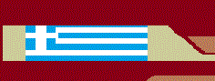

|  |
Ciekawe miejsca na świecie |
|
WitajCiekawe miejsce w GrecjiAtenyBędąc w Grecji i nie odwiedzić Aten, to jak być w Warszawie i nie zobaczyć (chociaż z zewnątrz) Pałacu Kultury i Nauki. Punktem obowiązkowym jest Akropol – antyczne ruiny usytuowane na wzgórzu. Najpopularniejszą budowlą jest świątynia Partenon poświęcona bogini Atenie. Warto zobaczyć również inne obiekty znajdujące się w Akrópolis, m.in. Erechtejon ze sławnymi kariatydami, Propyleje czy Teatr Dionizosa. U stóp Akropolu znajduje się Plaka – najstarsza dzielnica Aten z XVIII-wiecznymi kamienicami. W Atenach znajduje się też najsłynniejsza Agora, czyli rynek główny. Na uwagę w tym miejscu zasługują świątynia Hefajstosa oraz Stoa Attalosa. Orientalny charakter miasta można dostrzec w dzielnicy Monastiraki.
© Strona została wykonana przez Mateusza Stanikowskiego |